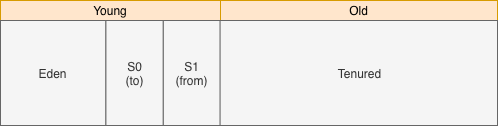
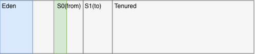
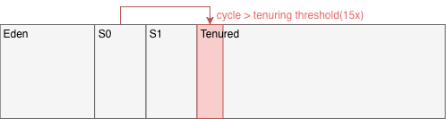

如果已經看過《About ART - Part 2 - Garbage Collection》的讀者，可將此篇當成前傳來看；還未看過的讀者，可以先看完此篇，再接續前篇的內容。
為求閱讀順暢，以下不會深入討論詳細的設定和特例。
眾所皆知，Android是基於Java語言開發，轉成Dalvik bytecode後在Dalvik VM(DVM)執行。就如同JVM，DVM也使用Garbage collection(GC)，來處理記憶體分配和回收的操作，開發者因此可以專注於程式的邏輯和架構設計。即使如此，開發者仍然要理解JVM或DVM如何處理記憶體，畢竟GC不是萬能，其回收的方式仍與程式的撰寫方式緊密相關。
要理解Dalvik GC，得先從Java GC開始了解。而要了解Java GC，又得先從JVM在執行時會使用的記憶體空間架構開始。
Run-time data areas
所有的空間通稱為Run-time data areas，依照官方文件所述，可劃分成以下六類：
- Heap space：存放程式執行中所分配的物件(Object)，並只能透過automatic storage management system，也就是GC來回收，當GC無法提供足夠的空間時，就會產生OutOfMemory(OOM)的錯誤。
- Method area：存放能代表物件的類別(Class)，包含Run-time constant pool、靜態函示和變數名稱還有程式碼。當Method area空間不足時，就會產生OOM的錯誤。
- Run-time constant pool：用於存放bytecode執行時需要的資料，就是反組譯class檔後會看到的的Constant pool。此空間屬於Method area，也就可能因Constant pool過大產生OOM的錯誤。
- **PC(Program counter)**：用於記錄當前正被執行的指令的位址，如果是native的函示則不會設值。
- **JVM stacks(Java stack)**：用於存放多個Frame的資料結構，並且依照設定的不同，Stack大小可以是固定或是可變動的。如果是固定的，當thread要求增加大小時會產生StackOverflow的錯誤；如果是可變動的，當記憶體不足時會產生OOM的錯誤。
- Native method stack：屬於非Java語言用的stack，有和JVM一樣的限制和錯誤。
其中PC、JVM stacks和Native method stack是跟隨著thread建立而產生或是刪除；因此可將這三個歸類為Thread一個大項。
JVM stacks裡的Frame會在函式呼叫時建立；函示結束時刪除，不論是否有錯誤。其細節內容如下：
- Local variable：一個陣列來存放Frame所代表的函示會用到的Local variable。
- Operand stack：一個last-in-first-out(LIFO)的資料結構，用於bytecode執行時期。
- Dynamic reference：用於連結到Frame所代表的函示，其所屬的class在Method area內的Run-time constant pool。
- Return value：當前函示的回傳值。
Generation
Java GC有用到Generation Hypothesis的概念，詳細在後面介紹，因此Heap space的部分又可再區分成：
- Young(Nursery)**：存放較為新建的物件。依照GC的設計，這區域又可分成Eden、Survivor(S0, S1)。**
- **Old(Tenured)**：存放存活時間較長的物件。
這裡要提到一個特殊的generation：**Permanent(PermGen)**。其實原本並沒有這個generation，而是在JVM演進的過程中產生，詳細歷史可以看這篇官方blog。其在定義上存放的東西和Method area相同，因此大多都將其視為同一個區塊。
由前一段落內的官方blog內文可以知道，PermGen原本是為了效能而產生。不過因為其存放很多跟Class相關的資料，所以程式內使用的類別越多，就越容易吃光系統所分配的記憶體空間，導致OOM的錯誤。有興趣深入看此篇blog。
於是在2014，Oracle在Java8開始，使用**Metadata space(metaspace)**取代PermGen，並將PermGen原本負責的內容拆分到Heap space或Native space。詳細可看此篇官方blog。
其有以下兩個主要優點：
- 由Heap space移出到Native space中，則其最大空間則是實際的記憶體上限。但開發者仍可透過設定來進行限制。
- Metadata space滿的時候，主動觸發GC，並決定是否提升上限。
兩個機制交互作用下，就可以有效使用空間，並解決OOM。不過如果設定了Metadata space的最大空間，就依然有機會陷入之前PermGen的問題。
Thread Local Allocation Buffer
對於所有在設備上運行的Thread來說，記憶體都是一樣的；給予所有Thread使用相同範圍記憶體的權限，則容易產生競爭(contention)的情形。雖然可以用Lock解決，但這無疑是降低分配空間的速度，影響的是整個程式的執行效率。
所以Thread Local Allocation Buffer(TLAB)被設計來解決此問題，Thread在Eden有自己所屬的區塊，讀寫都不需與其他Thread競爭。TLAB滿的時候，Thread會再要求新的TLAB。如果物件大於TLAB的大小，則可能直接放在Eden或是Old區塊內。
綜合以上，目前Run-time data areas可以總結如下圖：
Basic algorithm
相信大多Android開發者都經歷過C語言等Low-level programming language的時期，在那時開發者需要自行宣告記憶體，並在不需要時主動釋放。但程式邏輯有時相當複雜，釋放記憶體的時機考驗著開發者的設計能力，以及細心程度。
於是，High-level programming language如Java就透過Garbage Collection(GC)，來主動幫助開發者處理未正確釋放的記憶體空間。主流的GC依照核心概念可以粗略分成Reference counting和Tracing。
Reference counting
顧名思義，就是計算每個物件被引用的次數：
引用次數是0的物件就會被回收，所以上圖由左到右表明三種在GC後會產生的狀況：
Keep：引用數都大於1，不需要回收。
Reclaim：引用物件為0，可以回收；回收後會導致其引用的物件的引用次數也歸0，於是一起回收。
Retain cycle：物件互相引用，使得引用次數都大於0，則無法被GC判定為該回收的對象。
以Java來說，Retain cycle容易發生在non-static inner class或是anonymous inner class/method。一般的解法是用WeakReference來告訴GC其中一個物件是可回收的對象，就可以打破這個cycle。
Tracing
此類型的GC會以特定物件為GC root，並由這些物件當成起點找出所有引用關係：
無法從GC root觸及(reachable)到的物件將視為就會被回收，所以上圖由左到右表明二種在GC後會產生的狀況：
- Keep：可以從GC root直接或間接引用，不需要回收。
- Reclaim & Retain cycle：無法從GC root直接或間接引用，需要回收。
因此，只要Retain cycle內的物件沒被其他cycle外的物件引用，使用Tracing GC就可以順利回收整個Retain cycle內的物件。此類型GC最常見的就是Mark-Sweep GC。
Mark-Sweep
就如其名，Mark-Sweep GC有分成Mark和Sweep兩大步驟。
Mark
依照前面所述的內容，Tracing GC需要先決定好GC root。GC root代表是在GC啟動的當下，就可以確定是不可被回收的物件，以Java來說，通常有以下幾種GC root：
Active thread
Local/Static variable
JNI reference
其中JNI物件是由native code產生，從JVM角度是無法得知，直接當成不可回收。除了這些，依照實作不同可能會有不一樣的GC root，但選出來後的用途都是相同的：作為查詢引用狀況的起點。
另外，為了避免引用的狀態在標記過程中改變，使得標記結果與事實不符。在GC啟動後，會停住所有的thread，稱作**stop-the-world**，或是GC pauce。此停頓會一直持續到整個GC結束為止，成為Mark-Sweep GC最大的缺點。
Sweep
此階段最基本的實作，就是清除後，GC就算是完成，沒有被清除的物件會留在原地：
由圖中可以看出，在長時間使用後，閒置區塊會越來越零散，造成**External fragmentation**：
- 閒置區塊總和大於要宣告的物件大小，但沒有一個連續的區塊足以容納。
在這情況下，系統就會發出OutOfMemory的錯誤。
Moving
此可透過多一個**Moving(Compact)**步驟來進行修正，並有以下兩種：
- Copy：同時維護兩個相同大小的空間，並在sweep階段將留下來的區塊搬移至另一空間；不論GC前後，都有一個空間是完全閒置的。這也是Copy GC的缺點：永遠會佔用兩倍的空間，且一半空間都處於閒置狀態。
- Compact：則是從基本的實作再多走一步，將留下來的區塊直接往前集中：
不論是什麼GC，只要有這兩種步驟之一，就也能稱為Moving GC；反之Non-moving GC。
調整記憶體位置有以下幾種好處：
- 標記成不需要的區塊不用特別處理，可直接覆蓋使用。
- 分配更快，因為不需要從零散的閒置區塊中找到可容納的區塊，只要從目前使用的區塊位置接續放入即可。
- 可在當前空間直接進行移動，避免多餘的空間消耗。
- Mark階段產生的引用路徑，也會是搬移時的參考，因此彼此關聯的物件有機會被集中在同一個memory page內，可提升執行效率。
但也有其缺點：
- 搬移記憶體是耗時，且一樣需要stop-the-world的操作，所以勢必會拉長整個GC所需要的時間。
Concurrent Mark-Sweep
不論GC後是否需要移動記憶體區塊，stop-the-world都會對程式的執行產生影響。尤其是需要與使用者互動的real-time application，任何一點有感的停頓都會影響整體的使用經驗。對應的解法就是讓GC執行的步驟，調整成與程式同步進行，也就是Concurrent Mark-Sweep(CMS)。
基本的Mark-Sweep GC和thread之間執行的時間軸如下：
Thread執行間的空白長度，取決於GC的時間長短。根據前面的介紹，可以推測最花時間的是Mark階段。於是步驟調整如下：
看圖可發現步驟被拆的更細，並且大多步驟都與程式並行。
- Initial Mark：標記GC root直接引用的對象。
- Concurrent Mark：以前一步標記的結果當起點，繼續標記引用到的物件。
- Concurrent Preclean：執行的過程中可能會有新的物件產生，或引用狀態產生變化，則必須要重新從這些產生變化的區塊重啟一次標記。此步驟同時也可以降低下一步的停頓時間。
- Remark：從GC root再重新走一次。由於Preclean有預先重啟標記，這邊所需要的時間就大幅降低。
- Sweep：清除沒有被標記的物件。
由於CMS是針對GC pause而設計，因此不會再執行Moving操作。因此CMS繼承Mark-Sweep的主要缺點：
- 記憶體區塊會在多次GC後逐漸變得零散，造成External fragmentation。
Mark bitmap
紀錄物件標記狀態的方式實作上有分成以下兩種：
- Embedded：每個物件伴隨著一個mark-bit。
- Separated：使用另一個空間來儲存mark-git。
因為Mark-bit只有在GC時需要，所以Embedded將會在一定的程度上增加多餘的空間消耗，因此CMS選擇用額外的空間來存放Mark-bit，如此就可以在需要時才建立。此空間又可稱作Mark Bitmap。
Mark stack
不論是原本的Mark-Sweep或是CMS，都需要有個空間，來記錄已被標記，但尚未用作查詢引用的起點的物件。這空間的資料結構通常是stack，因此也稱作Mark stack。缺點是如果stack太大，反而會引發GC，則大小也必須要控制住。
一個解法是一次只放一個物件，且放入後就將其拿來作查詢，可想而知這會產生很長的GC pause，並不適合用在CMS。
Mark bitmap vs Mark stack
對照其存的物件，本質上都是一樣的：被標記的物件。因此Mark bitmap可用來接手Mark stack原本的功能，而Mark stack變成Recursive mark中用來追蹤需要進行延伸標記的物件，又稱To-be-scanned stack。
如此就可以實作出以下步驟：
- Initial Mark：將GC root直接引用的物件所對應的Mark bitmap上標記。
- Concurrent Mark：依照順序從Mark bitmap中取出物件，再次進行延伸的標記。
如此就可明確切割標記過程成兩部分，有效降低GC開始的GC pause。
Recursive Mark
標記是依照記憶體位址，由小到大來執行。同時，交互引用的物件不會依照順序存放，而是零散在記憶體中。如此在標記時，就有可能遇到新標記物件的記憶體位置，小於當前物件，如此就產生一個問題：
- 標記結束後，某部分新標記的物件，將無法再被當成起點重新執行標記操作。
在這樣的問題下，即使標記完成，仍有機會沒標記到一些被標記物件間接引用的物件。雖然可擴增Mark bitmap，讓其多記錄一些資訊，但這無疑會讓操作複雜化。
於是Mark stack就被賦予了新的任務：
- 存放記憶體位置小於當前物件的新標記物件。
假設目前有數個物件，依照記憶體位置由小到大分別是ABCDEFG，CE是標記起點：
相關步驟如下：
- Push：標記從CE依序出發，首先從C找到B，因為B位置小於C，則將B放入Mark stack；E引用到F，其位置大於E，會在接下來的標記過程被使用到，所以不用加入Mark stack。
- Pop：將B從Mark stack取出，從B開始標記，因此找到A，A因位置小於B而放入Mark stack；D與F同理則不用。
此過程會持續到Mark stack清空為止，如此就可以保證在標記階段結束時，可以標記到所有被引用到的物件。同時也因為是存放間接引用的物件，數量通常較低，於是可以降低所需的額外空間。
Generation Hypothesis
因為Sweep之前需要先確定引用的狀況，很明顯的，如果GC要處理的區塊越大，Mark所需時間越長；stop-the-world時間會更長。那是否有辦法讓需要處理的範圍縮小？根據Generation Hypothesis的定義：
- 新產生的物件有更高機會被回收。
- 存活越久的物件有更高機會不被回收。
套用這理論，Heap space被切分成Young(Eden、Survivor)**和Old(Tenured)**：

S0和S1又可稱作from和to，並在GC的過程中不斷交換身份，世代交替的完整步驟如下：
- 一開始，新物件被放在Eden，S0是to，S1是from：
- 一輪GC後，Eden內存活的物件就會被搬移(promote)到S0(to)。完成後，S0和S1互換角色，現在S0是from，S1是to：
- 新的物件繼續被放在Eden：

- 再一輪GC後，Eden和S0(from)內存活的物件會被放到S1(to)，然後再一次交換角色：
- 持續重複前面步驟，在S0和S1持續替換的過程中，會紀錄持續存活的物件所經歷過的GC次數(cycle)：
- 達到一定次數(tenuring threshold)後還存活的物件，會被搬移到Old(Tenured)，JVM預設是15次：

透過這樣的步驟，持續存活的物件會向Old區塊集中。相較之下，Young區塊內的物件通常很快就不再需要，就需要較頻繁的使用GC來立即清除。
有這樣的需求差異，GC可依照範圍切分成Minor GC、Major GC，和Full GC。
- **Minor GC(Mark-Copy)**：針對Young區塊，會在Eden漸滿時啟動。依照前面世代交替的步驟，Minor GC至少會執行Mark和Copy的動作。Sweep不需要，因為標記的物件會被搬移到全新的空間(S0或S1)，留在原地的就是不需要的，直接覆蓋即可。
- Major GC(Mark-Sweep-Compact)**：針對Old區塊，會在Old漸滿時啟動。Major GC會執行完整的Mark-Sweep，但因為Old物件理論上會持續更久，因此這邊還可再執行Compact來將區塊集中**，避免External fragmentation。
- Full GC：針對Young和Old區塊，會在整體漸滿時啟動。Full GC會執行跟Major GC相同的操作。如果特定Class不會再被使用時，也會清除Metadata space裡對應的物件。
實際上，Major GC通常發生於Minor GC之後，是特別針對Old區塊執行的GC。且Major GC和Full GC並沒有明確定義，簡單分還是只有Minor GC和Full GC。不過為了分開介紹Young和Old區塊的GC，以下還是會繼續使用Major GC。
Cross-generation reference
帶入了世代的概念，就得要注意跨區引用，不論是Mark-Sweep或是CMS，跨區引用都算是GC root；所以在Mark階段除了原本定義的GC root，還要加上跨區引用。
不過，為了尋找跨區引用，在Minor GC會有效率的問題：
- 掃過整個Old區塊是不切實際的，因為Old區塊的空間通常大很多。
於是，Card table被設計來解決Minor GC遇到的效率問題。
而對Major GC來說，Young區塊通常較小，做法上可直接掃過整個Young區塊，因此Major GC會視Young區塊都是GC root。
Card table
如同Mark bitmap，Card table使用額外的空間，且每張card對應一段記憶體，基本上是512bytes。CMS將其用於Old區塊，當Old區塊物件引用Young區塊物件(Old-Young)，Write barrier就會擷取此段操作，並標記Old物件對應到的card為dirty：
這對不同範圍GC有不同用途：
- Minor GC：在Mark階段可以從Card table找到從Old區塊出發的跨區引用，不用掃過整個Old區塊。
- Major GC：CMS在Concurrent Mark操作時，可以用來記錄跨區引用的變化，就可在Preclean階段預先處理，降低Remark要處理的量。
每次GC後重置Card table，如此可確保GC時都是新增的跨區引用。
Mod unit table
Minor GC在透過dirty card來找Old到Young的引用時，如果都沒有，會將card標成clean，避免下次Minor GC重複掃過，產生無謂的操作。但Minor GC可能與CMS的Concurrent marking同時執行，代表dirty card的狀態有機會被翻轉，也即是：對CMS來說是dirty card，對Minor GC來說則已經不是。
解法是讓Minor GC標記dirty card到Mod union table，然後掃描其中紀錄的dirty card。這樣當CMS走到Remark階段時，就可以依照原本的設計來繼續往下執行。且Mod union table紀錄的只有dirty card，所需要的資料結構將更小，可以不必在意其對記憶體使用效率的影響。
Java GC雖然沒有特別在文件中介紹此table，但依然可以在JDK的原始碼內找到相關的定義。
Promotion failed
依照generation切割記憶體區塊，目的是為了降低單次GC所處理的範圍，從而減少GC pause長度。但如果Full GC時常被觸發，那就失去分世代的意義，所以必須要了解Full GC啟動的原因。
首先必須要知道的是，在1.4.2，Minor GC在執行時，**會預期Old區塊會有一塊連續空間(Young Generation Guarantee)**，可以容納Eden加上一個Survivor：
於是，Full GC啟動時，GC log可能會看到以下兩種訊息：
- Promotion fail：代表GC認為Old區塊沒有足夠的連續空間放。Promotion failed也有可能是因為External fragmentation；此時Major GC還不會啟動，但Minor GC會認為沒有足夠的連續區塊來使用。
- Concurrent mode failure：CMS執行過程中執行了Minor GC，而此時的Old空間不足；表示CMS來不及清出足夠的連續空間，於是直接中斷CMS並執行Full GC。
簡言之就是當下的GC認為Old區塊無法提供所需的空間時。
除了Promotion failed，以下還有幾個其他會觸發Full GC的原因：
- Metadata space：此啟動機制是與Heap space分開運作，因此也有Heap space沒滿，但Metadata space已滿的情況下觸發Full GC。
- 開發者主動呼叫**
System.gc()，或是執行Heap dump**來抓取當前記憶體使用狀態。
根據官方blog，在5.0之後，Young Generation Guarantee做了調整：
- 預期的空間為前幾次promote物件總空間的平均值，且此平均值通常遠小於Eden加上一個Survivor，於是降低Minor GC失敗的機會。依賴平均值也有可能因為前幾次promote空間較多，造成平均值偏高，超過剩餘可使用的空間，因此也具備還原到Minor GC執行前狀態的功能。
- 不再強制需要連續的空間，降低External fragmentation發生的機會。
以上就是與Generation Hypothesis相關的介紹。雖然GC依照處理範圍分成三種，但不代表彼此之間是分開執行。Minor GC也可以觸發Full GC，或是Major GC會與Minor GC交互運行。
Algorithm with generation
Java現有的GC都有世代的概念，因此現有的GC在不同世代上使用不同的algorithm組合：
- Serial & Parallel GC：Young和Old區塊的GC可等同於前面所述Minor GC和Major GC，不同的是使用的Thread數量。
- CMS GC：CMS與Serial和Parallel GC搭配使用，所以只有Old區塊會用CMS。
Garbage-First
Garbage-First(G1)是針對多核心，且大記憶體的設備所設計，目的是追求效率的同時，也能有較低的GC pause。
G1依然保留著世代的概念，並將Heap space切割成相同大小的region，數量預設是2048個，且每個region都可以是Eden、Survivor或是Old。而TLAB原本是一段連續的記憶體區塊，在G1就是以region為單位。
透過設定，region大小可在1至32MB之間，也可以指定Young region在整個Heap space內佔有的比例：
G1的GC，並沒有各自一個完整流程，而是彼此交錯。不同於CMS用generation來切分出三種範圍的GC，G1的GC粗略地分有兩個操作：Concurrent Marking和Evacuation。
- Evacuation：包含標記(Mark)和搬移(Copy)，所以會stop-the-world，又稱Evacuation pause，並依照處理的region類型分成Young GC和Mixed GC。
由於G1和CMS一樣可以執行同步標記，且多了Copy步驟來解決CMS會有的External fragmentation。於是在Java 9之後取代CMS，詳細可看相關文件。
各類型Evacuation和Concurrent Marking如果接連出現，順序會是Young GC、Concurrent Marking phase然後Mixed GC。
Young GC
與CMS的Minor GC類似，只處理Young region：
- 新物件都會被放在被選為Eden的region內；如果物件大小超過一個region，則直接放在被選為Old的region，又稱Humongous region：
- 當Young region總大小即將達到設定好的佔比時，就會進行Young GC。在這期間內，G1必需要標記Young region內還存活的物件，然後搬到被選為Survivor的region；Survivor region中存活次數已達tenuring threshold的物件，則被搬入被選為Old的region：
Concurrent Marking phase
當Old region總大小到達一定佔比時，就會伴隨(piggybacked)Young GC一起開始Concurrent Marking的操作：
- Initial marking：紀錄當下可以被GC root引用到的物件。由於這一步是與Young GC一起，於是其可以從Young GC取得引用的狀態，並與Young GC共用一段pause。
- Root region scan：以Initial mark得到的Survivor當作Root region，並標記所有被Root region內物件直接引用到的物件。
- Concurrent mark：從前面已標記的物件繼續標記有引用到的物件。
- Remark：標記引用的最後一個階段，由於使用了**Snapshot at the begining(SATB)**，這邊只重新處理SATB紀錄的物件，於是所需要的時間就大幅降低。
- Cleanup：依照region內的物件引用狀況，計算各個region的回收率並排序。有了回收率，這邊也可以先回收完全會是空的region。
Snapshot at the beginning
試想在CMS時代，一個物件A引用C，物件A在Initial Mark階段被紀錄，但有可能在Concurrent Mark過程中被替換，導致A到C的引用被刪除，於是物件C就這樣被誤刪了。
CMS使用Card table/Mod unit table來處理類似問題，但換成region後，就不適合使用Card table。因此G1使用Snap at the beginning來處理這樣的問題，主要作法如下：
- Take snapshot：紀錄GC一開始，所有存活的物件，連同之後在Concurrent mark產生的新物件。
- Write barrier：以snapshot為基礎，擷取寫入操作，並記錄被更改引用的物件。
透過這兩個操作，可達到以下幾個好處：
- 避免漏接。
- 不需從GC root重複做標記動作，降低Remark階段所需時間。
而缺點是：
- 過程中失效的引用有可能是真的不需要的，而SATB會使這些引用留到下一次GC。
Mixed GC
Concurrent marking後，就可以開始回收Old region。不同於CMS一次回收所有Old region，G1採用漸進式的方式，也就是啟用Young GC的同時，帶入一定數量的Old region，所以才稱作Mixed GC。
Mixed GC不一定都會跟在Concurrent Marking後面。根據前面介紹，在Concurrent Marking階段就有機會可以回收大部分的Old region，那就沒必要再將Old region帶入另一輪的GC。因此較高的機會是再一輪Young GC後才是Mixed GC。
Mixed GC會一直不斷執行，直到G1認為不再需要同時回收Old region時。
Collection Set
G1用Mark階段會透過Collection Set(CSet)來決定要GC的region。程式執行一開始因為物件都是新的，所以CSet只會有Young region，此時GC就是Young GC。
在Old region到達一定佔比，並觸發Concurrent Marking之後，Old region就有回收率來作為放入CSet的參考值：
- 回收率較高的代表存活的物件少，回收效益較高，需要先被回收。
這也是為什麼稱作(Garbage first)，而此時的GC是Mixed GC。除了回收率，加入CSet的條件還與設定值相關，詳細可以看這篇官方文件。
Remembered Set
如同CMS，G1也有Card table來處理跨region的引用，並以Card table為基礎，建立了Remembered Set(RSet)。與Card table不同，RSet紀錄region間的外部引用，這表示RSet存的內容可能是Young-Young、Young-Old、Old-Old等不同世代間的引用。
使用RSet帶來的好處如下：
- Young GC：效果類似CMS的Minor GC，但RSet可以精準的找出彼此間的引用，而不是如掃過整個Card。
- Mixed GC：有了外部引用，就不用掃過整個Young region來找Young-Old的引用。Old-Old的引用也可以直接從RSet取得，就不用掃過整個Old region。
Pause prediction model
與之前的GC相同，如果Promotion failed或是Metadata space已滿，還是會觸發Full GC。因此G1透過CSet縮小要收集的region範圍，然後搭配RSet再從region內直接定位跨區引用，就可以將每次要收集的數量和時間量化。
如此就可以用Pause prediction model來預測當前CSet所需要的時間，提供開發者依照需求限制GC Pause的時間。
Full GC
G1觸發Full GC的條件和CMS一樣，能避免就應避免。但G1使用多次小而高效的Young GC，中間穿插幾次Mixed GC，搭配Pause prediction model可讓每次選取的CSet，帶來的GC效果都是較好的。如此就降低觸發Full GC的機會。
Allocation
本篇介紹了很多Java用到的GC，依照是否會再移動記憶體可以分成兩種：
- Non-moving：Mark-Sweep、CMS、G1。
- Moving：Mark-Copy、Mark-Sweep-Compact、G1。
也因此記憶體在GC後，Non-moving會呈現不連續的區塊；反之Moving則會是連續的。這樣的記憶體區塊分佈也影響著分配空間的方式：分成Free-list和Bump-point。
Free-list
用於不連續記憶體空間，用Linked-list的方式，將所有可用的記憶體區塊串連。要分配空間時，就依照要宣告的物件大小，從list一個個找過。如果Memory fragmentation的問題太嚴重，則會拖慢分配空間的效率。
Bump-point
用於連續空間，只有紀錄最後一個插入物件的位置。分配空間時，只要看物件的位置就可推算剩餘空間，並直接將物件接在前一個物件後面。
最長與Bump-point搭配使用的是TLAB，沒有Lock的干擾，加上簡潔的記憶體分配方式，可提高整體宣告物件的效率。只有在Thread用到多個TLAB時，要共同使用會有多餘的操作影響效率。
所以，所有GC對照以上兩種方式則如下：
- Serial & Parallel GC：Eden區塊使用Free-list，Survivor區塊使用使用Bump-point。
- CMS：CMS與Serial和Parallel GC搭配使用，CMS會用於Old區塊為Free-list；Young區塊如上。
- G1：整體Region由Free-list管理，region內為Bump-point。
Summery
到這就是Java GC的相關介紹，接著由於Android也已經發展一段時間，GC相關的內容較多。如果只是要概略知道GC的發展過程，可以直接看：
- 《About ART - Part 2 - Garbage Collection》
如果想從細節開始了解，則可以往下繼續看到GC系列的第二篇：
- 《Year End Report - GC - Give me space! (Dalvik)》
References
- A Generational Mostly-concurrent Garbage Collector
- Garbage-First Garbage Collection
- Java HotSpot Garbage Collection
- Java Platform, Standard Edition HotSpot Virtual Machine Garbage Collection Tuning Guide
- Changes to Garbage Collection
- Java Garbage Collection Basics
- Understanding G1 GC Logs
- Minor GC vs Major GC vs Full GC